Come si gioca / How to play
Reflexes è un gioco di riflessi, attenzione e velocità. Il gioco comprende 20 livelli. I livelli da 1 a 10 sono i livelli Standard; i livelli da 11 a 20 ripropongono gli stessi dieci giochi in modalità Turbo, più rapida e difficile.
Prima di iniziare scegli quante prove vuoi effettuare: 2, 4, 6 oppure 10. Nei livelli Standard le prove sono suddivise tra EASY e HARD. Per ogni prova leggi l'istruzione mostrata nella parte superiore dello schermo e completa il compito prima che il tempo finisca.
Il gioco assegna punti e tiene conto del tempo. In basso puoi vedere il punteggio parziale e totale e il timer della prova.
Reflexes is a reflex, attention and speed game. The game contains 20 levels. Levels 1 to 10 are the Standard levels; levels 11 to 20 repeat the same ten games in Turbo mode, which is faster and more difficult.
Before starting, choose how many trials you want to play: 2, 4, 6 or 10. In Standard levels the selected trials are divided between EASY and HARD. For each trial, read the instruction shown at the top of the screen and complete the task before the timer expires.
The game awards points and measures your response time. At the bottom of the screen you can see the partial and total score together with the trial timer.
Pulsanti principali / Main controls
🇮🇹 Italiano
- START: inizia dal livello 1 e chiede quante prove vuoi giocare.
- TURBO: inizia direttamente dal livello 11.
- NEXT: passa al livello successivo quando le prove selezionate sono terminate.
- BACK: ricomincia il livello corrente e azzera il punteggio parziale di quel livello.
- MUTE: attiva o disattiva i suoni.
- EXIT: chiude il gioco.
🇬🇧 English
- START: starts from level 1 and asks how many trials you want to play.
- TURBO: starts directly from level 11.
- NEXT: moves to the next level after the selected trials are completed.
- BACK: restarts the current level and resets its partial score.
- MUTE: turns sound on or off.
- EXIT: closes the game.
Prima di iniziare / Before you start
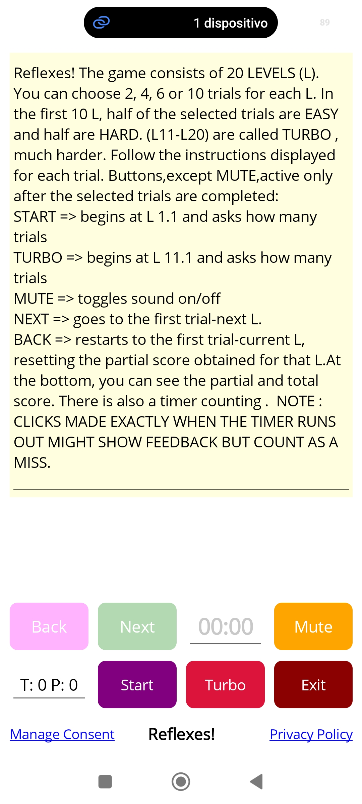
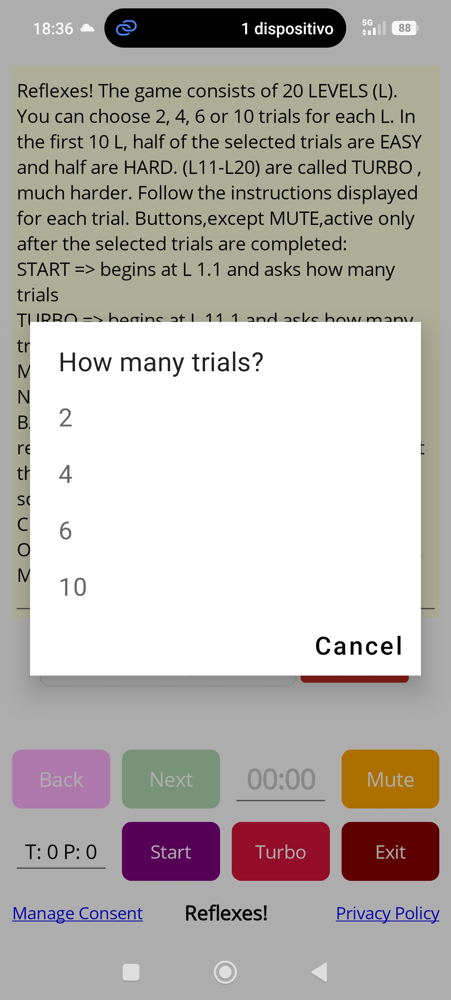
I 10 giochi Standard
L'istruzione originale in inglese è già visibile nella parte superiore di ogni screenshot. A fianco trovi la traduzione nelle principali lingue. Nei giochi che richiedono una dinamica particolare è presente anche una breve spiegazione aggiuntiva.
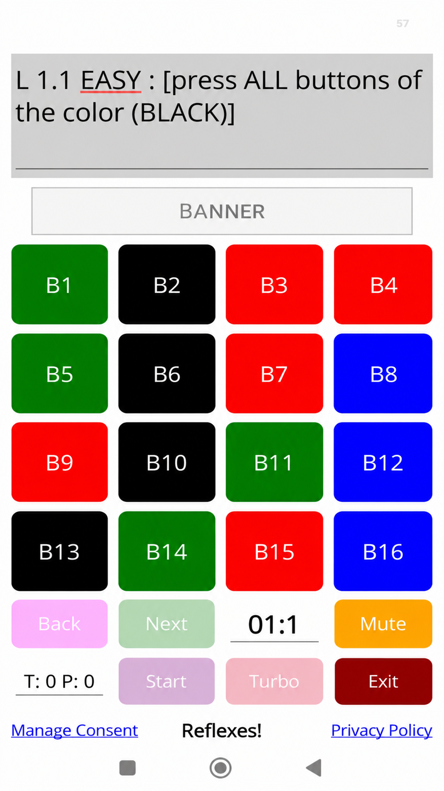
Game 1
English instruction: visible in the screenshot.
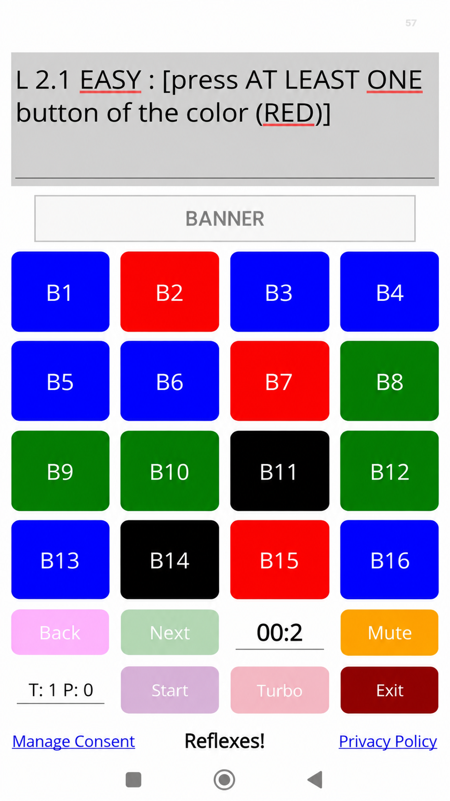
Game 2
English instruction: visible in the screenshot.
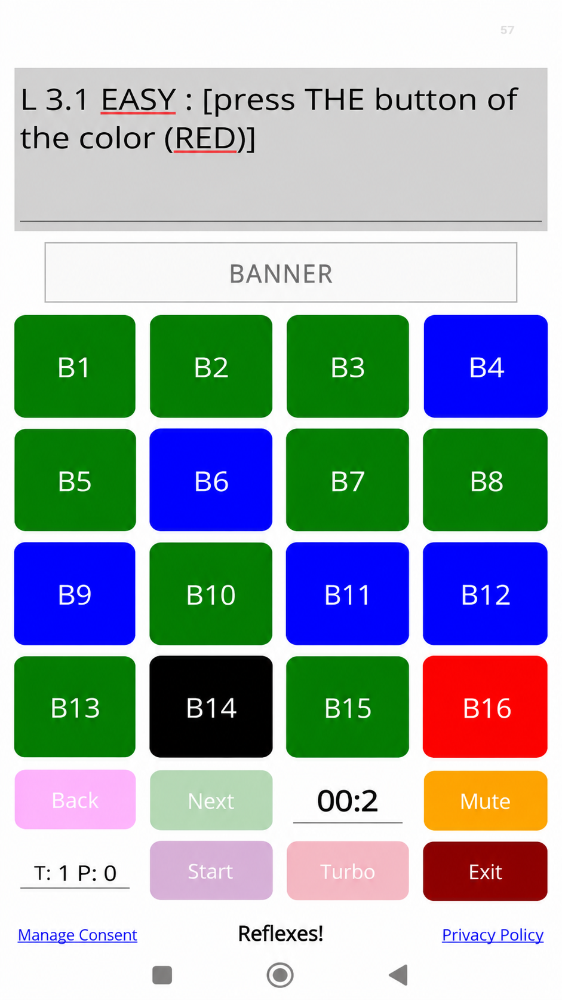
Game 3
English instruction: visible in the screenshot.
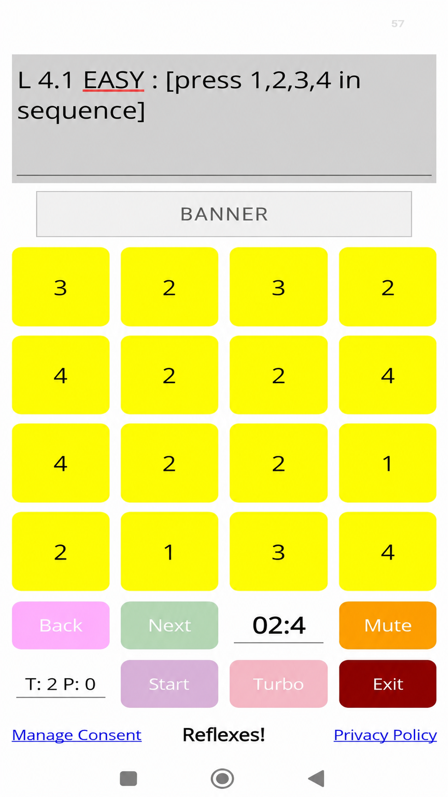
Game 4
English instruction: visible in the screenshot.
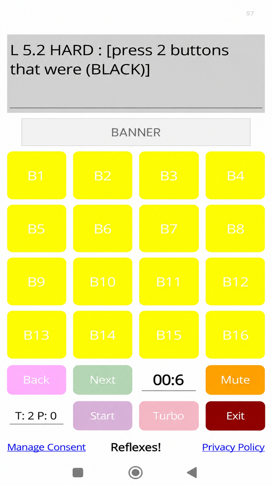
Game 5 — Memory
English instruction: visible in the screenshot.
Prima vengono mostrati i colori originali. Dopo un breve momento tutti i pulsanti diventano gialli: devi ricordare quali avevano il colore richiesto.
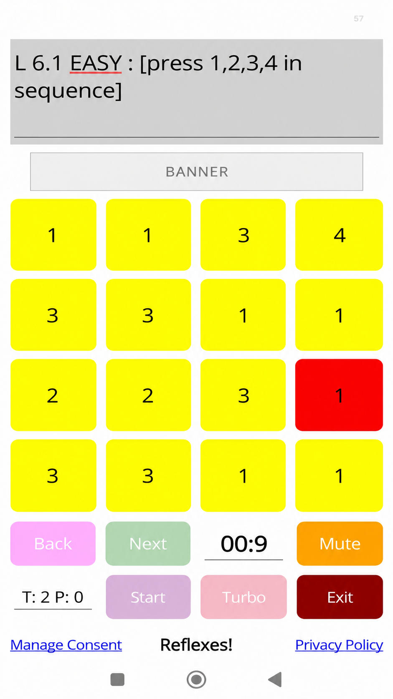
Game 6
English instruction: visible in the screenshot.
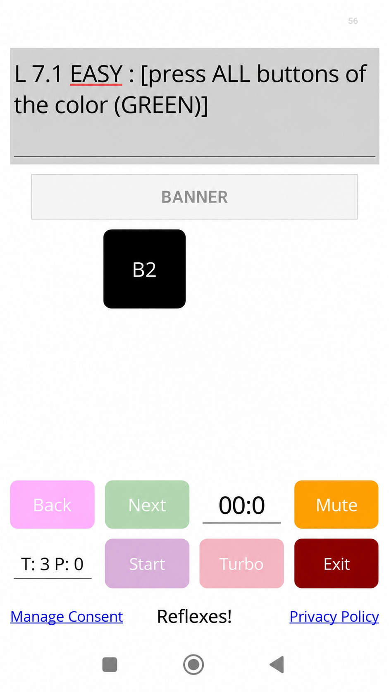
Game 7 — One by one
English instruction: visible in the screenshot.
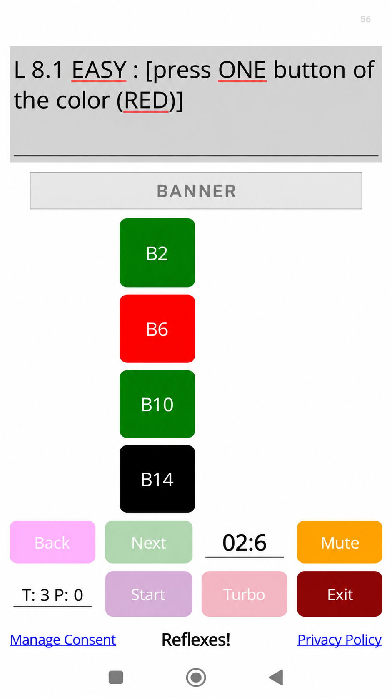
Game 8 — Moving columns
English instruction: visible in the screenshot.
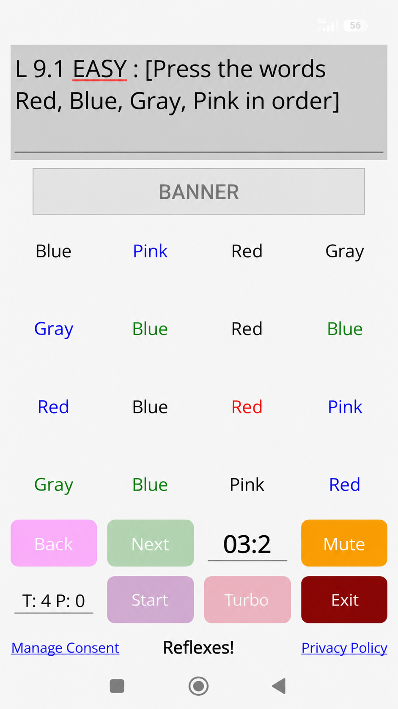
Game 9 — Words & colors
English instruction: visible in the screenshot.
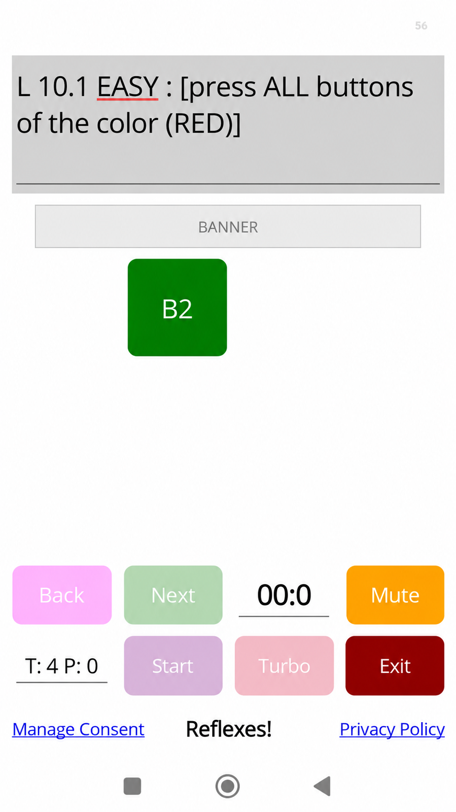
Game 10 — Random positions
English instruction: visible in the screenshot.
Turbo — Levels 11–20
I livelli 11–20 utilizzano gli stessi dieci tipi di gioco, ma con tempi più rapidi e parametri più impegnativi. Per questo non è necessario duplicare altri dieci screenshot.